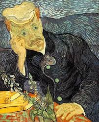

Dr. Gashe's Picture was sold at Christie's in New York to Saito Ryohei, honorary chairman of Paper Corporation, for the highest price ever offered at an auction in art. Pictures that were sold privately after Saito died are still not available to the public.
